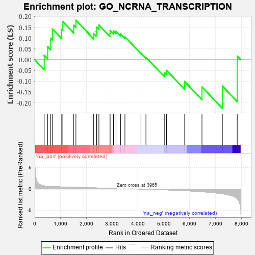

| | | Dataset | 7d |
| Phenotype | NoPhenotypeAvailable |
| Upregulated in class | na_neg |
| GeneSet | GO_NCRNA_TRANSCRIPTION |
| Enrichment Score (ES) | -0.22565165 |
| Normalized Enrichment Score (NES) | -0.59258115 |
| Nominal p-value | 0.9538044 |
| FDR q-value | 1.0 |
| FWER p-Value | 1.0 |
Table: GSEA Results Summary

Fig 1: Enrichment plot: GO_NCRNA_TRANSCRIPTION
Profile of the Running ES Score & Positions of GeneSet Members on the Rank Ordered List
| PROBE | GENE SYMBOL | GENE_TITLE | RANK IN GENE LIST | RANK METRIC SCORE | RUNNING ES | CORE ENRICHMENT | | 1 | LARP7 | | | 369 | 0.731 | 0.0200 | Yes |
| 2 | MYOD1 | | | 504 | 0.628 | 0.0601 | Yes |
| 3 | TAF8 | | | 622 | 0.587 | 0.0987 | Yes |
| 4 | CDK7 | | | 686 | 0.564 | 0.1420 | Yes |
| 5 | TAF9 | | | 1046 | 0.475 | 0.1400 | Yes |
| 6 | PHAX | | | 1089 | 0.466 | 0.1771 | Yes |
| 7 | TAF6 | | | 1512 | 0.389 | 0.1593 | Yes |
| 8 | CCNK | | | 1596 | 0.374 | 0.1828 | Yes |
| 9 | RPRD2 | | | 2283 | 0.263 | 0.1204 | No |
| 10 | NCBP2 | | | 2383 | 0.248 | 0.1304 | No |
| 11 | TAF1B | | | 2404 | 0.245 | 0.1502 | No |
| 12 | ZC3H8 | | | 2486 | 0.229 | 0.1608 | No |
| 13 | RPAP2 | | | 2913 | 0.164 | 0.1221 | No |
| 14 | ELL | | | 2921 | 0.163 | 0.1360 | No |
| 15 | SRRT | | | 3050 | 0.143 | 0.1329 | No |
| 16 | TAF11 | | | 3147 | 0.130 | 0.1326 | No |
| 17 | TAF13 | | | 3325 | 0.100 | 0.1195 | No |
| 18 | TBP | | | 3493 | 0.078 | 0.1056 | No |
| 19 | MTOR | | | 4114 | -0.025 | 0.0298 | No |
| 20 | IPPK | | | 4306 | -0.060 | 0.0112 | No |
| 21 | TAF5 | | | 5031 | -0.204 | -0.0613 | No |
| 22 | DDX11 | | | 5102 | -0.225 | -0.0497 | No |
| 23 | CCNT2 | | | 5804 | -0.406 | -0.1010 | No |
| 24 | CELF3 | | | 6475 | -0.651 | -0.1262 | No |
| 25 | CDK9 | | | 7266 | -1.138 | -0.1223 | No |
| 26 | SP1 | | | 7840 | -2.321 | 0.0165 | No |
Table: GSEA details [plain text format]
 Fig 2: GO_NCRNA_TRANSCRIPTION: Random ES distribution
Fig 2: GO_NCRNA_TRANSCRIPTION: Random ES distribution
Gene set null distribution of ES for GO_NCRNA_TRANSCRIPTION